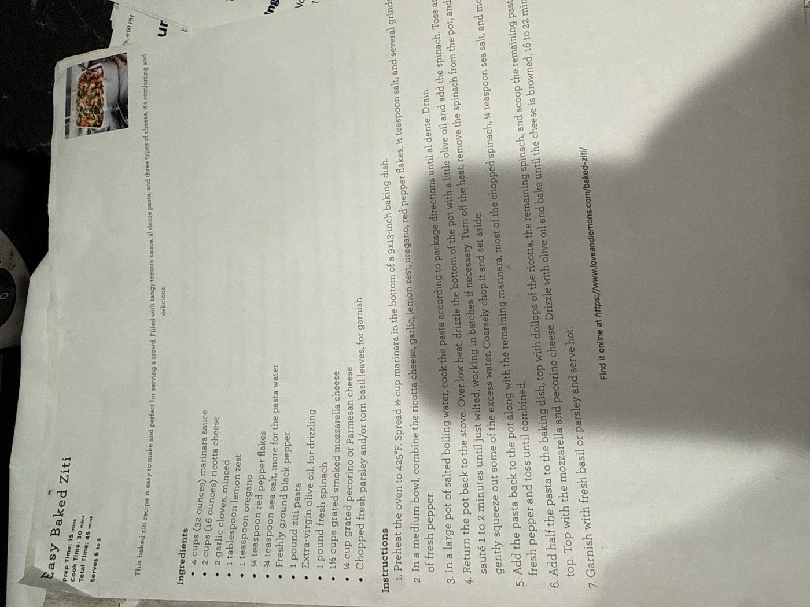

Easy Baked Ziti

Easy to make and perfect for a crowd: tangy marinara, al dente ziti, wilted spinach, and three types of cheese — a lemon-and-garlic ricotta, smoked mozzarella, and pecorino on top. Comforting and delicious, and a good one for serving 6 to 8 people.
6–8servings
15 minprep time
30 mincook time
Vegetariandiet
Ingredients
- 4 cups (32 oz) marinara sauce
- 2 cups (16 oz) ricotta cheese
- 2 garlic cloves, minced
- 1 tbsp lemon zest
- 1 tsp oregano
- ¼ tsp red pepper flakes
- ¾ tsp sea salt, more for the pasta water
- Freshly ground black pepper
- 1 lb ziti pasta
- Extra-virgin olive oil, for drizzling
- 1 lb fresh spinach
- 1½ cups grated smoked mozzarella cheese
- ¼ cup grated pecorino or Parmesan cheese
- Chopped fresh parsley and/or torn basil leaves, for garnish
Method
- Prep the dish. Preheat the oven to 425°F. Spread ½ cup marinara in the bottom of a 9x13-inch baking dish.
- Make the ricotta mix. In a medium bowl, combine the ricotta, garlic, lemon zest, oregano, red pepper flakes, ½ tsp salt, and several grinds of pepper.
- Cook the pasta. In a large pot of salted boiling water, cook the pasta according to package directions until al dente. Drain.
- Wilt the spinach. Return the pot to the stove over low heat. Drizzle the bottom with a little olive oil and add the spinach. Toss and sauté 1–2 minutes until just wilted, working in batches if necessary. Turn off the heat, remove the spinach, gently squeeze out excess water, coarsely chop, and set aside.
- Combine. Add the pasta back to the pot along with the remaining marinara, most of the chopped spinach, ¼ tsp sea salt, and fresh pepper, and toss until combined.
- Assemble and bake. Add half the pasta to the baking dish, top with dollops of the ricotta mixture and the remaining spinach, then scoop the rest of the pasta on top. Top with the mozzarella and pecorino. Drizzle with olive oil and bake until the cheese is browned, 16–22 minutes.
- Serve. Garnish with fresh basil and/or parsley and serve hot.
Find it online at loveandlemons.com/baked-ziti.